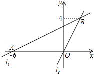
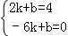
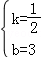

2016年北京市中考数学试题 · 数学解答题 第21题 · 对应解析
21．（5分）（2016•北京）如图，在平面直角坐标系xOy中，过点A（﹣6，0）的直线l1与直线l2：y=2x相交于点B（m，4）．
（1）求直线l1的表达式；
（2）过动点P（n，0）且垂于x轴的直线与l1，l2的交点分别为C，D，当点C位于点D上方时，写出n的取值范围．

【解答】解：（1）∵点B在直线l2上，
∴4=2m，
∴m=2，点B（2，4）
设直线l1的表达式为y=kx+b，
由题意

，解得
，∴直线l1的表达式为y=x+3．
（2）与图象可知n＜2．